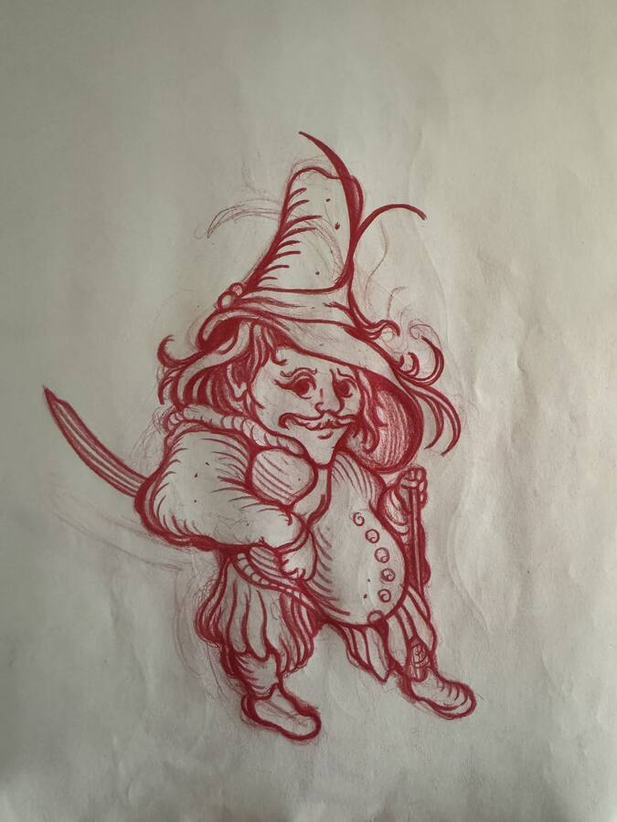
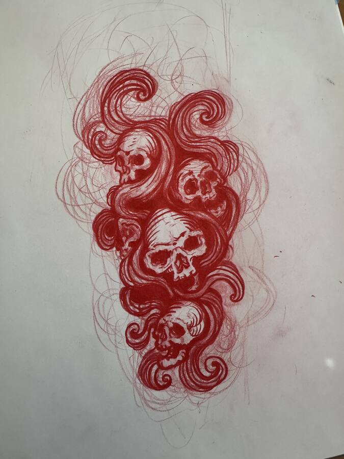
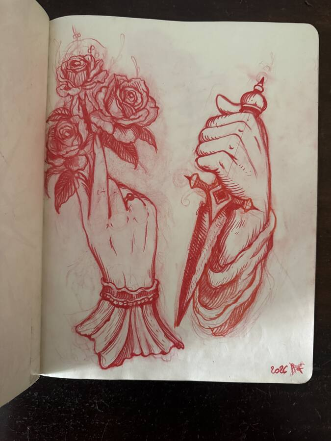

III — ProcessusDu carnet à la peau
Processus
Une pièce naît trois fois. Au carnet d'abord, au crayon rouge, le soir. À l'encre ensuite, quand le trait est décidé. Sur la peau enfin, où il ne reste qu'à poser proprement ce qui a été tranché sur le papier.
Le carnet
Tout commence au crayon rouge, une couleur qui ne se prend pas pour du définitif. Les pages sont montrées telles quelles, avec leurs hésitations. Les croquis deviennent des flashs ou la base d'un projet personnalisé.
« Je dessine le soir, souvent à la bougie. La flamme bouge, les ombres aussi, et le trait suit. Le jour, je corrige. »
Maxime
« La main est le premier sujet que j'ai dessiné et celui que je n'ai jamais lâché. Elle tient, elle offre, elle menace. »
Maxime
« L'une avec la dague, l'autre avec les roses : ce qu'on garde et ce qu'on donne. »

« J'aime ce qui a l'air d'avoir mille ans, même dessiné hier. »

« Rien de morbide. Des esprits dans la brume. »
L'encre
Quand le croquis tient, il est repris à l'encre noire, sur papier, à la taille réelle du tatouage. C'est le dessin du catalogue, et celui qui sera décalqué sur la peau.


« Le crayon rouge cherche. Il a le droit de se tromper ; l'encre, elle, décide. »


« Les bagues sont venues à l'encre, pas au crayon. Il faut laisser une place à ce qui arrive en dernier. »

« L'arme, la lumière et ce qui reste. Trois choses qui vont ensemble depuis longtemps. »
La séance
Le dessin est décalqué, positionné, validé ensemble dans le miroir. Puis on commence. Une personne à la fois, dans le calme, avec des pauses quand il le faut.
« En séance, je parle peu. Le dessin est déjà décidé ; il ne reste qu'à le poser proprement. C'est le moment le plus calme. »
Maxime
« Les ombres viennent en dernier, par petites hachures, comme en gravure. C'est là que la pièce prend sa profondeur. »
Maxime
Après
Une pièce n'est finie qu'une fois cicatrisée : c'est à ce moment qu'on la photographie. Une fiche de soins est remise après chaque séance, et les retouches sont comprises dans les six mois.

« Cicatrisé, le trait s'assoit un peu dans la peau. C'est là qu'on voit s'il tient. »

« Le coude bouge tout le temps. Un dessin qui y survit survivra partout. »

« Dans dix ans, les roses seront encore là, un peu plus douces. »